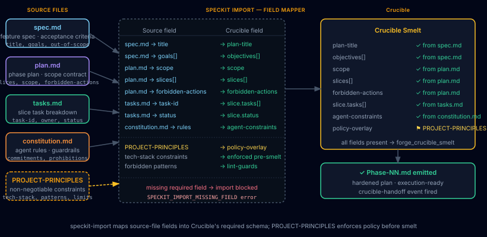

Spec Kit Interop
Plan Forge's native import path for Spec Kit artifacts, map spec.md, plan.md, tasks.md, and constitution.md directly into a Crucible smelt with zero re-specifying.
Spec Kit is an alternative entry path into Crucible. Read this chapter if your organization already writes formal specifications and you'd rather import them than answer the interactive interview. If you don't use Spec Kit, you can safely skip the whole chapter, nothing else in the manual depends on it.
Import Flow
When the Crucible intake scanner detects Spec Kit artifacts in your project, it offers to auto-import them rather than run the full interactive interview. The import flow maps four source files into Crucible's required schema in a single pass:

The diagram above shows the full mapping surface. Source fields on the left feed into the field mapper (center), which outputs a populated Crucible smelt (right). PROJECT-PRINCIPLES.md, if present, is applied as a policy overlay, tech-stack constraints and forbidden patterns are enforced pre-smelt so they don't need to be re-entered during hardening.
Source files
| File | Origin | What it provides |
|---|---|---|
spec.md |
/speckit.specify |
Feature title, goals array, out-of-scope boundaries, acceptance criteria. Maps to plan-title and objectives[] in the smelt. |
plan.md |
/speckit.plan |
Scope definition, slice list, and forbidden-actions table. Maps directly to scope, slices[], and forbidden-actions. |
tasks.md |
/speckit.tasks |
Per-slice task breakdown with task-id, owner, and status fields. Maps to slice.tasks[] and slice.status inside each slice entry. |
constitution.md |
/speckit.constitution |
Agent rules, commitments, and prohibitions. Imports as agent-constraints in the smelt, directly equivalent to Plan Forge's PROJECT-PRINCIPLES.md. |
Field mapping reference
Representative mapping from source to smelt schema:
| Source field | Crucible field | Notes |
|---|---|---|
spec.md → title | plan-title | Required. Import blocked if absent. |
spec.md → goals[] | objectives[] | Array preserved as-is. |
plan.md → scope | scope | Required. Import blocked if absent. |
plan.md → slices[] | slices[] | Each slice entry carries its own task list. |
plan.md → forbidden-actions | forbidden-actions | Merged with any rules derived from constitution.md. |
tasks.md → task-id | slice.tasks[] | Keyed to matching slice by position. |
tasks.md → status | slice.status | Carries prior execution state into the smelt. |
constitution.md → rules | agent-constraints | Enforced by the hardener during Step 2. |
PROJECT-PRINCIPLES.md | policy-overlay | Applied pre-smelt as non-negotiable constraint layer. |
spec.md lacks a title, or plan.md lacks a scope section, the importer halts with a SPECKIT_IMPORT_MISSING_FIELD error and reports which field is absent. No partial imports are written. Fix the source artifact and re-run.
Import Procedure
There are three ways to trigger the Spec Kit import: via the Crucible CLI, via the MCP tool, or via pforge run-plan auto-detection.
Option 1 — Crucible CLI
The most explicit path. Run the import command from the project root where the Spec Kit artifacts live:
# Import from default Spec Kit artifact locations
pforge crucible import --from=spec-kit
# Import from a non-default directory
pforge crucible import --from=spec-kit --dir=specs/my-feature
# Dry run: validate the mapping without writing a smelt
pforge crucible import --from=spec-kit --dry-runThe importer scans for spec.md, plan.md, tasks.md, and constitution.md in the specified directory (defaults to the repo root and common sub-paths: specs/, memory/, .speckit/). It reports which files were found, which fields mapped cleanly, and which fields were absent or required manual resolution.
Option 2 — MCP tool
From any MCP client (Copilot Chat, Claude Code, Cursor):
forge_crucible_import({
source: "spec-kit",
dir: "specs/my-feature", // optional, defaults to repo root scan
dryRun: false
})Returns a structured result: { ok, smeltId, mappedFields[], missingFields[], warnings[] }. If ok is false, the missingFields array tells you exactly what to fix.
Option 3 — Auto-detection in pforge run-plan
When you run a plan that was generated from a Crucible smelt, the orchestrator checks whether the smelt originated from a Spec Kit import. If so, LiveGuard's PostSlice hook automatically compares each completed slice against the original spec.md acceptance criteria, providing drift detection that goes back to the original specification, not just the hardened plan.
pforge run-plan docs/plans/my-feature-PLAN.mdNo extra flags needed. The Spec Kit provenance is embedded in the smelt metadata at import time.
Step-by-step walkthrough
- Generate Spec Kit artifacts, run
/speckit.specify,/speckit.plan,/speckit.tasks, and/speckit.constitutionin your Spec Kit–enabled IDE. This producesspec.md,plan.md,tasks.md, andconstitution.md. - Run the import, from the Plan Forge project root:
pforge crucible import --from=spec-kit. Confirm the field mapping report looks correct. - Review the generated smelt, the Crucible smelt is written to your project's smelt directory. Open it in the dashboard or inspect it with
pforge crucible status. Adjust any field overrides before hardening. - Harden the plan, run Step 2 (Plan Hardener) against the smelt using the
/step2-harden-planprompt in Copilot Chat, or invokeforge_crucible_hardenfrom any MCP client. This produces the execution-ready plan file with validation gates. - Execute,
pforge run-plan docs/plans/my-feature-PLAN.md. Spec Kit provenance in the smelt metadata activates LiveGuard drift checks againstspec.mdcriteria throughout the run.
Resolving import warnings
| Warning / error | Cause | Fix |
|---|---|---|
SPECKIT_IMPORT_MISSING_FIELD |
A required field (title, scope) is absent from its source file. |
Edit the Spec Kit artifact and re-run the import. Use --dry-run to verify before committing. |
SPECKIT_IMPORT_AMBIGUOUS_SLICE |
A tasks.md task references a slice name that doesn't exist in plan.md. |
Ensure slice names match exactly. Case-sensitive. Re-run /speckit.tasks if tasks were generated before the final plan. |
SPECKIT_IMPORT_POLICY_CONFLICT |
PROJECT-PRINCIPLES.md forbids a pattern that constitution.md or plan.md permits. |
PROJECT-PRINCIPLES.md wins, it is the non-negotiable layer. Update the Spec Kit artifact to align with your project principles, or remove the conflicting rule from constitution.md. |
tasks.md → status import skipped |
The Spec Kit tasks.md uses a status vocabulary Plan Forge doesn't recognize (e.g. in-review). |
The importer maps done → done, in-progress → in_progress, and everything else → pending. Status values in the smelt can be manually adjusted before hardening. |
Ecosystem Extensions
The Spec Kit interop surface is part of Plan Forge's broader ecosystem integration layer. Beyond the four core import files, several extension points allow deeper interop between the two tools.
Spec Kit extensions as Plan Forge extension sources
Spec Kit's 40+ community extensions generate additional artifact types that Plan Forge can consume. When an extension produces a structured markdown artifact with a known schema, the Crucible importer attempts to map it. Currently supported extension artifact types:
| Extension artifact | Plan Forge mapping |
|---|---|
| Security spec (from security-focused speckit extensions) | Mapped to security-constraints in the smelt; activates security.instructions.md auto-loading |
| Database schema spec | Mapped to the database-schema smelt field; activates database.instructions.md |
| API contract spec | Mapped to api-contract; activates api-patterns.instructions.md |
| Test plan spec | Mapped to test-strategy; activates testing.instructions.md |
Extensions that produce non-standard artifact shapes are queued in the smelt's unresolved section for manual review, no extension output is silently dropped.
Bidirectional handoff: Plan Forge → Spec Kit
The flow isn't one-directional. Plan Forge can export a completed plan back to Spec Kit format for teams that want to archive specs alongside the implementation:
# Export the hardened plan as Spec Kit artifacts
pforge crucible export --to=spec-kit docs/plans/my-feature-PLAN.md
# Output: spec.md, plan.md, tasks.md written to ./speckit-export/This is useful when different team members work in different tools: the architect specifies in Spec Kit, the builder executes in Plan Forge, and the archived spec stays in Spec Kit format for documentation consistency.
Shared memory surface
Spec Kit's constitution.md and Plan Forge's PROJECT-PRINCIPLES.md serve the same function: declaring non-negotiable constraints for AI agents. When both files exist in a project, Plan Forge merges them at import time using a last-writer-wins policy (Plan Forge's file takes precedence on conflicts), then presents the unified rule set to the hardener. The merge report is included in the smelt metadata so you can audit exactly which rules came from each source.
constitution.md as the authoritative source (edited via /speckit.constitution) and let Plan Forge's import sync it to PROJECT-PRINCIPLES.md automatically. Use pforge crucible import --from=spec-kit --sync-principles to update PROJECT-PRINCIPLES.md in place.
Spec Kit interop in multi-agent runs
When using Plan Forge's multi-agent mode, each agent worker receives the Spec Kit provenance metadata in its slice context. This means a Copilot Coding Agent worker dispatched via pforge run-plan --worker copilot-coding-agent receives the original spec.md acceptance criteria alongside the Plan Forge scope contract, both constraint systems are active simultaneously.
Community extension registry entry
Plan Forge's Spec Kit interop is registered as a first-class community extension. You can inspect its schema, version history, and compatibility notes via:
pforge ext info spec-kit-interopFor the full Plan Forge extension surface (browsing, installing, and authoring community extensions), see Chapter 12: Extensions.
Further Reading
- Blog: Spec Kit + Plan Forge: Write the Spec, Enforce the Build, the motivation and combined workflow in narrative form
- Crucible, the Smelt station that receives the import
- Extensions, the community extension surface
- Multi-Agent Mode, dispatching Spec Kit–sourced plans to multiple workers
- Spec Kit on GitHub, the upstream tool